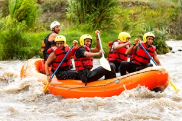

Anyone in reasonable health can go rafting.
2)What is the minimum age?There is no maximum age For a child on a Class II/III is 8 years. Although anyone over 60 should be in good health .
3)What is provided?Basic equipment consists of a raft, paddle etc..
4)I never go rafting? can I go anyway?You don't need to have Rafting experience to go rafting
5)When is the best time to go rafting?We recommend the following months with a good climate: January: it's 34 ° May: it's 34 ° July: 28 ° and it rains about 68%
September: 37 ° December: 37 ° and it rains in december 112mm
6)Is Food included in the price of the rafting?Of course, food is included in the price and consists of a sandwich, fruit, raw vegetables, juice and water. Soup and hot chocolate are also available. Dinner includes a choice of steak or salmon, salad, vegetables, potatoes, rice and dessert.
7) How much does a rafting session cost per person?One session per person costs 20 USD
We are waiting for you there with qualified and experienced staff to make your family dream come true. Do not hesitate.
